Tabla de Contenidos
- Introducción
- Metodología
- Análisis Descriptivo
- Análisis Bayesiano
- Análisis Ético e Impacto
- Conclusiones
- Referencias
1. Introducción
El modelo de financiamiento Buy Now, Pay Later (BNPL) ha experimentado un crecimiento acelerado en los últimos años. Servicios como Klarna, Afterpay y Affirm permiten a los consumidores fraccionar sus compras de comercio electrónico en cuotas sin intereses, reduciendo la fricción en la decisión de compra. Sin embargo, este esquema ha generado preocupación creciente entre reguladores y académicos, particularmente por la acumulación silenciosa de deuda y la exposición financiera de consumidores vulnerables —especialmente jóvenes y personas con empleo informal— que pueden no tener plena conciencia de sus obligaciones crediticias acumuladas (Dobbie & Song, 2015; Gathergood et al., 2019).
A diferencia del crédito tradicional, los servicios BNPL generalmente no reportan a las agencias de crédito y no están sujetos a las mismas verificaciones de solvencia, lo que dificulta la evaluación del riesgo real de incumplimiento. El puntaje crediticio (credit score) sigue siendo la medida operativa estándar de solvencia financiera y constituye la variable cuantitativa más directamente relacionada con el riesgo de crédito en este contexto.
El presente estudio aplica técnicas de inferencia bayesiana para analizar qué factores demográficos, laborales y de comportamiento financiero explican el puntaje crediticio de los usuarios de servicios BNPL, y cómo esa distribución difiere entre grupos de riesgo de incumplimiento.
Objetivos
- General: Analizar los factores asociados al puntaje crediticio de los usuarios BNPL mediante inferencia bayesiana, cuantificando la incertidumbre y comparando distribuciones entre grupos de riesgo.
- Estimar bayesianamente la distribución del Credit_Score por grupo de riesgo (Normal-Normal conjugado).
- Identificar los predictores más relevantes del Credit_Score mediante regresión lineal bayesiana con MCMC.
- Comparar la proporción de pagos tardíos entre grupos de estado laboral (Beta-Binomial).
- Evaluar las implicaciones éticas del uso de modelos estadísticos en clasificación de riesgo crediticio.
2. Metodología
2.1 Fuente de datos
Se utilizó el BNPL Financial Default Risk Dataset (Kaggle), un conjunto de datos sintético que contiene 10 000 observaciones y 11 variables, diseñado para simular el comportamiento crediticio de consumidores BNPL. La naturaleza sintética implica que las relaciones estadísticas son plausibles pero no extrapolables directamente a poblaciones reales.
2.2 Variable principal
Credit_Score fue seleccionada como variable principal cuantitativa continua por ser la medida operativa estándar de solvencia crediticia, con distribución aproximadamente normal (media = 663.7, std = 76.2, rango 300–850), directamente relacionada con el riesgo de incumplimiento (r = −0.41 con Default_Risk) y sin los problemas de inflación de ceros que presentan otras variables del dataset.
2.3 Estrategia bayesiana: cadena argumental de tres modelos
| Paso | Modelo | Variable respuesta | Método | Propósito |
|---|---|---|---|---|
| 1 | Normal-Normal | Credit_Score | Analítico (conjugado) | Comparar μ por grupo de riesgo |
| 2 | Reg. lineal bayesiana | Credit_Score | MCMC – NUTS (PyMC) | Identificar predictores |
| 3 | Beta-Binomial | Tasa pagos tardíos | Analítico + Monte Carlo | Comparar π por tipo de empleo |
2.4 Especificación de priors
- Normal-Normal: μ ~ Normal(650, 100²) — débilmente informativo, centrado en 650 pts (media genérica BNPL), ±196 pts al 95%.
- Regresión: β₀ ~ Normal(650, 100²), βⱼ ~ Normal(0, 50²), σ ~ HalfNormal(80) — priors débilmente informativos que permiten efectos de hasta ±100 pts al 95%.
- Beta-Binomial: π_k ~ Beta(1,1) = Uniforme(0,1) — no informativo sobre la tasa de pagos tardíos.
2.5 Tratamiento de datos faltantes
Las variables Credit_Score e Income_USD presentan ~3% de valores faltantes. Bajo el supuesto MCAR (Missing Completely At Random), se adoptó análisis de casos completos: 9 702 observaciones para los modelos 1 y 3, y 9 409 para la regresión (que requiere ambas variables).
3. Análisis Descriptivo
3.1 Estadísticas descriptivas
| Variable | n | Media | Std | Mín | Mediana | Máx | Sesgo |
|---|---|---|---|---|---|---|---|
| Age | 10 000 | 34.25 | 12.91 | 18 | 31 | 64 | +0.63 |
| Income_USD | 9 695 | 53 981 | 29 797 | 5 000 | 58 596 | 139 452 | −0.08 |
| Credit_Score ★ | 9 702 | 663.7 | 76.2 | 300 | 673 | 850 | −0.66 |
| Total_BNPL_Active_Loans | 10 000 | 2.32 | 1.85 | 0 | 2 | 10 | +1.38 |
| Total_BNPL_Debt_USD | 10 000 | 348.8 | 315.1 | 0 | 262.5 | 2 731 | +1.82 |
| Average_Transaction_Value_USD | 10 000 | 331.8 | 264.4 | 10 | 294.5 | 1 420 | +0.79 |
Tabla 1. Estadísticas descriptivas de las variables cuantitativas. ★ Variable principal del análisis bayesiano.
3.2 Distribución de variables categóricas
La variable Default_Risk muestra un marcado desbalance de clases: 88.0% Low, 6.8% Medium y 5.2% High, característico de datos crediticios reales. Employment_Status muestra predominancia de consumidores Employed (60.3%), seguidos de Student (19.7%), Freelancer (14.9%) y Unemployed (5.1%).
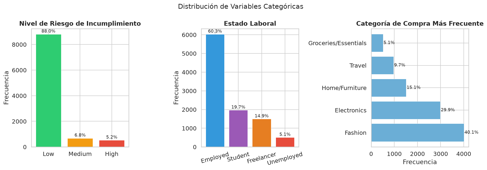
3.3 Credit_Score por nivel de riesgo
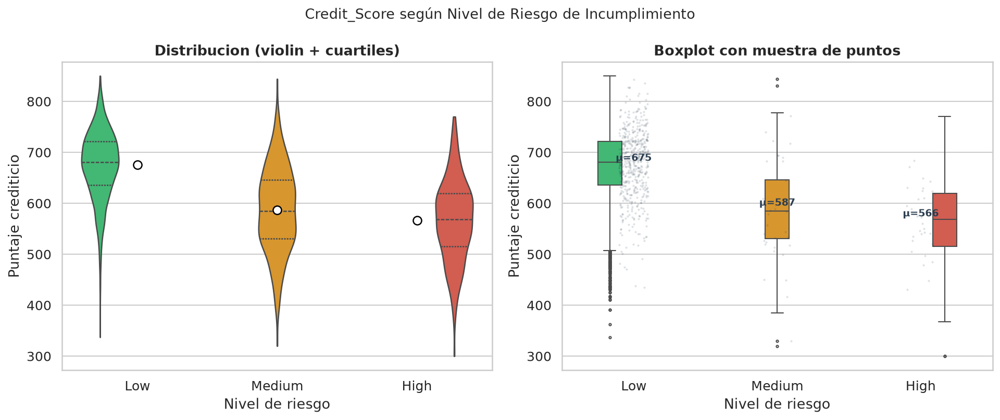
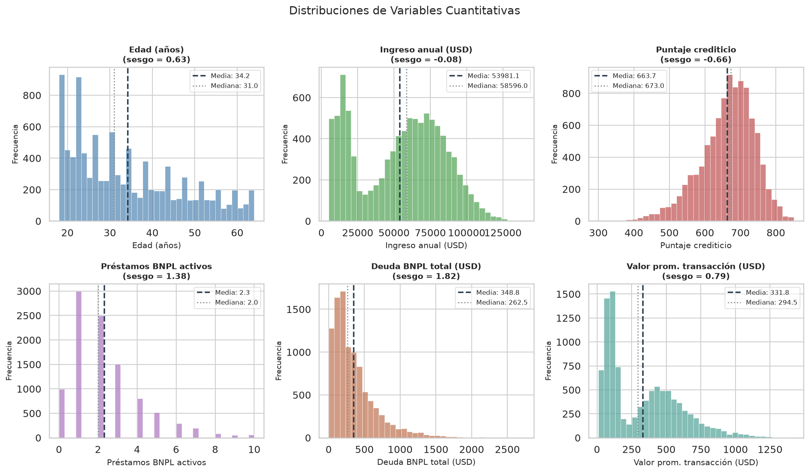
El análisis exploratorio revela diferencias sustanciales en el Credit_Score según el nivel de riesgo:
| Grupo | n | Media | Std | Mín | Máx |
|---|---|---|---|---|---|
| Low | 8 539 | 675.3 | 67.4 | 337 | 850 |
| Medium | 654 | 587.3 | 83.2 | 320 | 844 |
| High | 509 | 566.2 | 79.7 | 300 | 770 |
Tabla 2. Credit_Score por grupo de Default_Risk. La diferencia Low–High es de ~109 puntos.
3.4 Correlaciones y relaciones entre variables
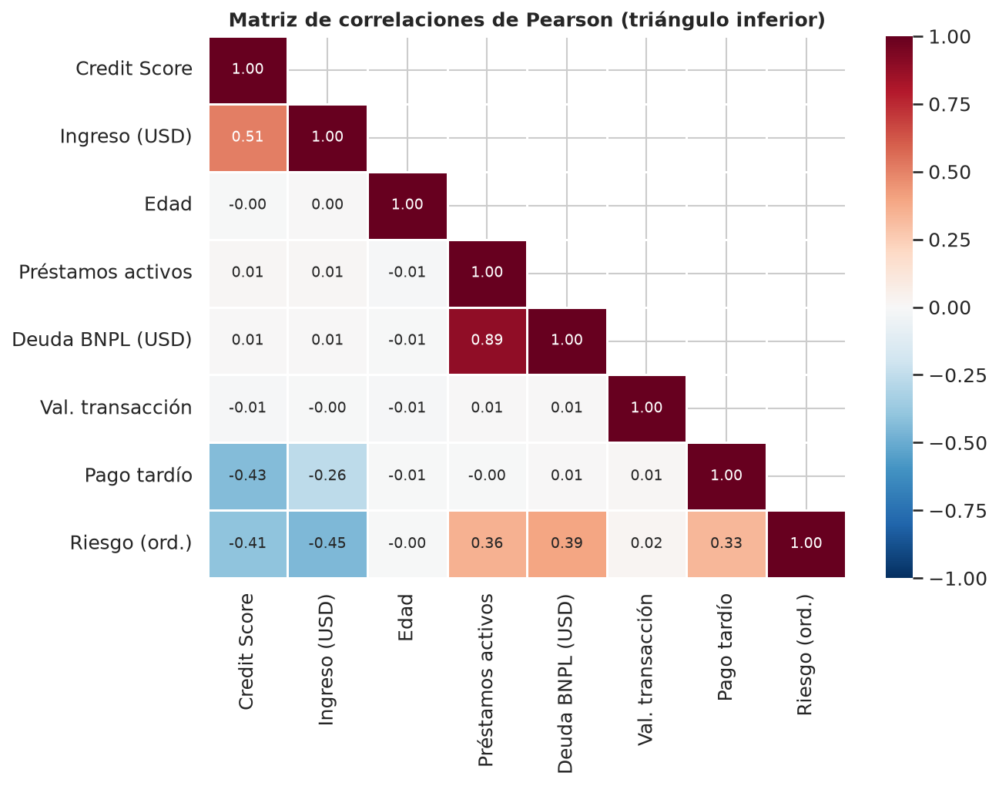
Destaca que Credit_Score tiene correlación prácticamente nula con Age (r=−0.002), Total_BNPL_Active_Loans (r=0.015) y Total_BNPL_Debt_USD (r=0.008) — resultado que el análisis bayesiano posterior confirmará: son las variables categóricas (estado laboral e historial de pagos) las que explican la variación del puntaje crediticio.
4. Análisis Bayesiano
4.1 Modelo Paso 1 — Normal-Normal (solución analítica)
Verosimilitud: Y_i | μ_k, σ_k² ~ Normal(μ_k, σ_k²) · Prior: μ_k ~ Normal(μ₀=650, τ₀²=100²)
Posterior (conjugado): μ_k | y_k ~ Normal(μₙ, τₙ²) · τₙ² = (1/τ₀² + n_k/σ̂_k²)⁻¹ · μₙ = τₙ² (μ₀/τ₀² + n_k·ȳ_k/σ̂_k²)
| Grupo | n | ȳ | μₙ (media post.) | τₙ (std post.) | IC 95% inf. | IC 95% sup. |
|---|---|---|---|---|---|---|
| Low | 8 539 | 675.33 | 675.33 | 0.7296 | 673.90 | 676.76 |
| Medium | 654 | 587.32 | 587.39 | 3.2502 | 581.02 | 593.76 |
| High | 509 | 566.23 | 566.33 | 3.5301 | 559.42 | 573.25 |
Tabla 3. Distribuciones posteriores del Credit_Score por grupo. Prior: Normal(650, 100²).
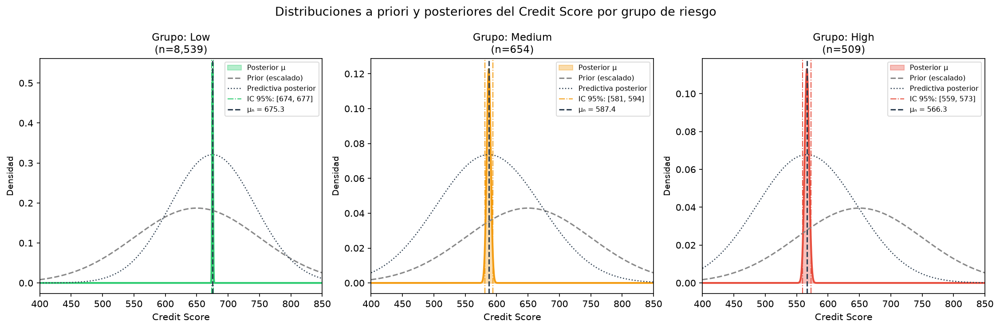
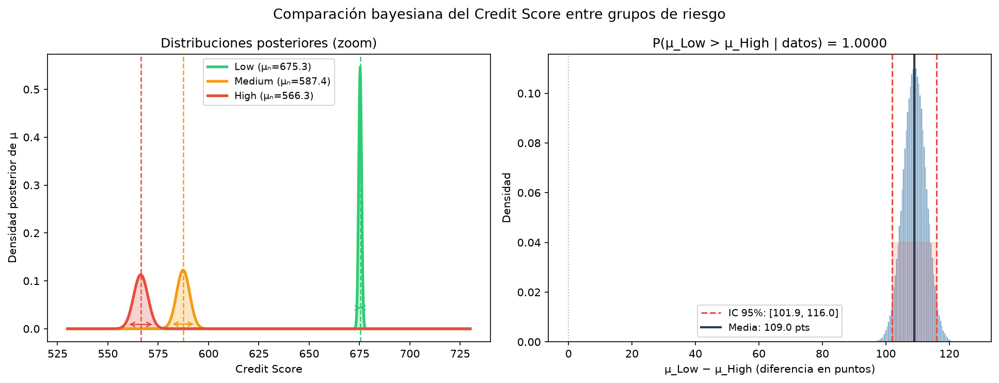
P(μ_High < μ_Low | datos) = 1.000000 · P(μ_Med < μ_Low | datos) = 1.000000 · P(μ_High < μ_Med | datos) = 0.999990
E[μ_Low − μ_High | datos] = 108.99 puntos, IC 95%: [101.95, 116.03]
Interpretación: existe certeza posterior prácticamente total de que el Credit_Score promedio de los consumidores de bajo riesgo supera al de alto riesgo en al menos 102 puntos — una diferencia con consecuencias directas sobre el acceso al crédito.
4.2 Modelo Paso 2 — Regresión Lineal Bayesiana con MCMC
Priors: β₀ ~ N(650, 100²) · βⱼ ~ N(0, 50²) · σ ~ HalfNormal(80) · MCMC: NUTS · 4 cadenas · 1 000 tune + 1 000 draws = 4 000 muestras totales
Diagnóstico de convergencia
→ Convergencia alcanzada en todos los parámetros. El muestreo NUTS exploró eficientemente el espacio posterior.
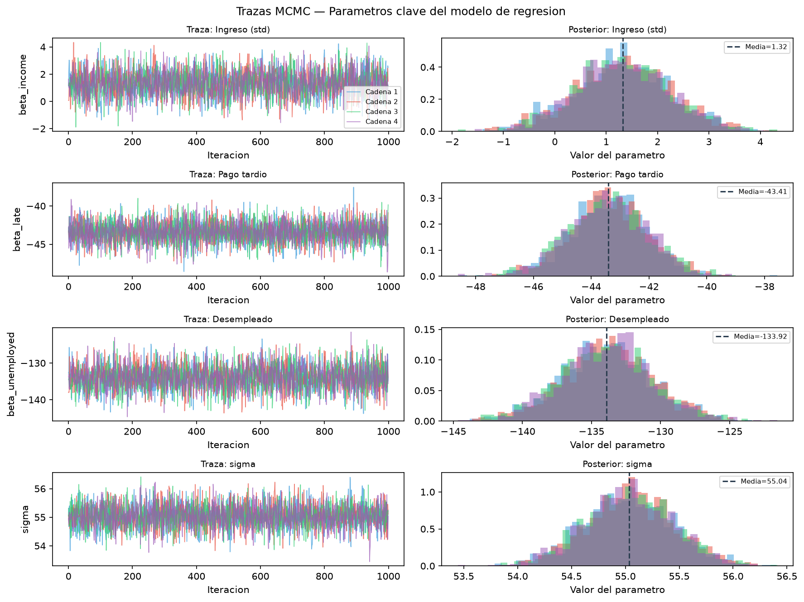
Coeficientes bayesianos
| Parámetro | Media post. | Std | IC 95% inf. | IC 95% sup. | R̂ | Significativo |
|---|---|---|---|---|---|---|
| Intercepto (β₀) | 705.65 | 0.91 | 703.87 | 707.46 | 1.001 | — |
| Ingreso anual (std) | +1.32 | 0.92 | −0.51 | +3.16 | 1.000 | ❌ IC incluye 0 |
| Edad (std) | +0.18 | 0.56 | −0.91 | +1.27 | 1.000 | ❌ IC incluye 0 |
| Préstamos activos (std) | +0.80 | 0.56 | −0.31 | +1.92 | 1.000 | ❌ IC incluye 0 |
| Val. transacción (std) | −0.30 | 0.57 | −1.41 | +0.81 | 1.001 | ❌ IC incluye 0 |
| Pago tardío (Sí=1) | −43.41 | 1.36 | −46.18 | −40.80 | 1.000 | ✅ Fuerte negativo |
| Status: Student | −88.62 | 2.32 | −93.07 | −84.06 | 1.001 | ✅ Muy fuerte negativo |
| Status: Freelancer | −47.15 | 1.70 | −50.50 | −43.80 | 1.000 | ✅ Fuerte negativo |
| Status: Unemployed | −133.92 | 3.28 | −140.42 | −127.35 | 1.001 | ✅ El más fuerte |
| σ residual | 55.04 | 0.41 | 54.23 | 55.84 | 1.000 | — |
Tabla 4. Resumen del posterior — Regresión lineal bayesiana. Referencia: Employed, sin historial de pago tardío.
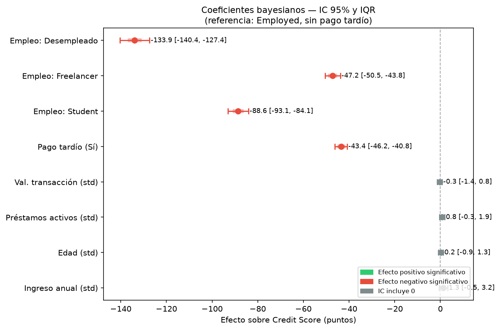
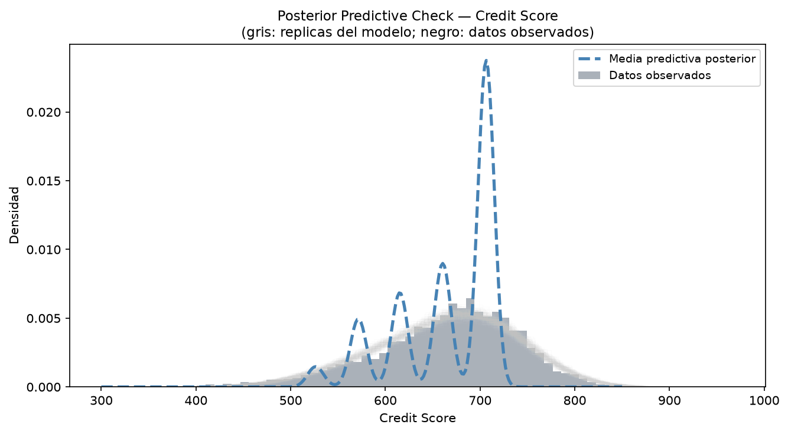
- Ser desempleado reduce el Credit_Score en 134 puntos (IC 95%: [−140, −127]).
- Ser estudiante lo reduce en 89 puntos (IC 95%: [−93, −84]).
- Tener un historial de pago tardío lo reduce en 43 puntos adicionales (IC 95%: [−46, −41]).
Predicción bayesiana para perfiles representativos
| Perfil | Descripción | Credit Score (media) | IC 95% |
|---|---|---|---|
| Empleado sin riesgo | Income=$75k, Edad=35, Préstamos=1, Sin pago tardío | 706.2 | [599, 814] |
| Estudiante típico | Income=$12k, Edad=22, Préstamos=2, Sin pago tardío | 615.1 | [508, 724] |
| Desempleado c/pagos tardíos | Income=$15k, Edad=27, Préstamos=4, Con pago tardío | 527.4 | [420, 638] |
Tabla 5. Predicciones bayesianas. Los IC 95% anchos reflejan honestamente la incertidumbre individual — ventaja clave sobre la estimación puntual frecuentista.
4.3 Modelo Paso 3 — Beta-Binomial (solución analítica)
Posterior (conjugado): π_k | datos ~ Beta(1 + X_k, 1 + n_k − X_k)
| Grupo | n | Pagos tardíos | Tasa obs. | π posterior (media) | IC 95% |
|---|---|---|---|---|---|
| Employed | 6 029 | 902 | 0.150 | 0.1497 | [0.141, 0.159] |
| Freelancer | 1 495 | 395 | 0.264 | 0.2645 | [0.243, 0.287] |
| Student | 1 968 | 869 | 0.442 | 0.4416 | [0.420, 0.464] |
| Unemployed | 508 | 310 | 0.610 | 0.6098 | [0.567, 0.652] |
Tabla 6. Distribuciones posteriores de la tasa de pagos tardíos por estado laboral. Prior: Beta(1,1).
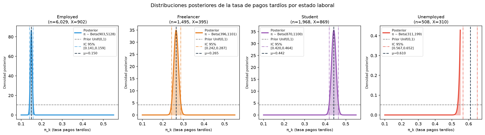
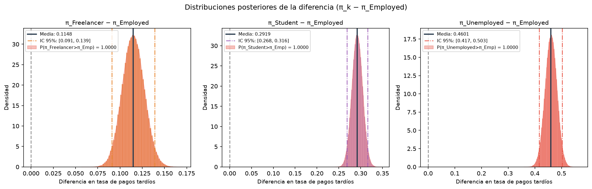
P(π_Freelancer > π_Employed | datos) = 1.0000, diferencia media: +0.1148, IC 95%: [0.091, 0.139]
P(π_Student > π_Employed | datos) = 1.0000, diferencia media: +0.2919, IC 95%: [0.268, 0.316]
P(π_Unemployed > π_Employed | datos) = 1.0000, diferencia media: +0.4601, IC 95%: [0.417, 0.503]
Los desempleados tienen una tasa de pagos tardíos cuatro veces mayor que los empleados formales (61% vs 15%), con certeza posterior = 1. Esto cierra la cadena causal: Employment_Status → Late_Payment → Credit_Score bajo → Default_Risk alto.
5. Análisis Ético e Impacto
5.1 Impactos de la solución estadística
Impacto económico: Los modelos de scoring crediticio determinan el acceso de millones de consumidores a servicios financieros. Un modelo impreciso puede excluir injustamente a consumidores solventes o aprobar crédito a consumidores en riesgo real, generando costos económicos directos en ambos casos.
Impacto social: El análisis revela diferencias sistemáticas en el puntaje crediticio asociadas al estado laboral. Si estos modelos se usan en decisiones automáticas, pueden perpetuar desigualdades estructurales: un estudiante o trabajador independiente podría ser rechazado no por su comportamiento de pago, sino por pertenecer a un grupo estadísticamente de mayor riesgo (discriminación estadística).
Impacto ético: La transparencia sobre las limitaciones del modelo (datos sintéticos, linealidad asumida, posible circularidad entre Credit_Score y Default_Risk) es un imperativo de integridad científica.
5.2 Análisis de escenarios
- Corto plazo: Si una empresa BNPL adoptara este modelo para decisiones de aprobación, los desempleados o estudiantes recibirían tasas más altas o serían rechazados — lo que puede agravar la exclusión financiera de poblaciones vulnerables.
- Mediano plazo: La normalización de modelos bayesianos en BNPL puede reducir la heterogeneidad en la evaluación crediticia, aumentando la eficiencia del mercado pero reduciendo la flexibilidad para casos atípicos.
- Largo plazo: Si los modelos entrenan en datos que ya reflejan discriminación histórica, reproducirán esos patrones (sesgo de confirmación), creando ciclos de exclusión auto-perpetuantes.
5.3 Dilema ético central
¿Tiene una empresa el derecho de usar el tipo de empleo como factor en un modelo de riesgo crediticio? Desde la perspectiva de eficiencia del mercado, sí — estas variables tienen poder predictivo estadístico. Desde la perspectiva de equidad y derechos civiles, no — las personas no deberían ser penalizadas por características que no controlaron. Los reguladores financieros, en colaboración con comités éticos interdisciplinarios, son los actores que deben determinar qué variables son permisibles.
6. Conclusiones
- Diferencia entre grupos confirmada con certeza bayesiana: Los consumidores de alto riesgo tienen un Credit_Score promedio 108.99 puntos inferior al de los de bajo riesgo (IC 95%: [101.95, 116.03]). La probabilidad posterior de que esta diferencia sea real es 1.000000.
- Las variables categóricas dominan sobre las continuas: El modelo de regresión bayesiana con MCMC (R̂ máx. = 1.0013, ESS mín. = 2 675, 0 divergencias) demuestra que el ingreso, la edad y el número de préstamos no tienen efecto estadísticamente significativo. En contraste, ser desempleado reduce el Credit_Score en 134 puntos y tener historial de pagos tardíos lo reduce en 43 puntos adicionales.
- El estado laboral es el predictor más poderoso de comportamiento de pago: El modelo Beta-Binomial confirma con probabilidad posterior 1.0000 que los desempleados tienen una tasa de pagos tardíos (61%) cuatro veces mayor que los empleados formales (15%), cerrando la cadena causal del análisis.
- Limitaciones: Dataset sintético sin contexto geográfico, linealidad asumida, posible circularidad entre Credit_Score y Default_Risk.
- Líneas futuras: Validar con datos reales, explorar modelos jerárquicos bayesianos, incorporar métricas de equidad (fairness) en la evaluación.
7. Referencias
Dobbie, W., & Song, J. (2015). Debt relief and debtor outcomes: Measuring the effects of consumer bankruptcy protection. American Economic Review, 105(3), 1272–1311.
Gathergood, J., Mahoney, N., Stewart, N., & Weber, J. (2019). How do individuals repay their debt? The balance-matching heuristic. American Economic Review, 109(3), 844–875.
Gelman, A., Carlin, J. B., Stern, H. S., Dunson, D. B., Vehtari, A., & Rubin, D. B. (2013). Bayesian Data Analysis (3rd ed.). Chapman and Hall/CRC.
PyMC Development Team. (2023). PyMC: Probabilistic programming in Python (v5). https://www.pymc.io
Salvatier, J., Wiecki, T. V., & Fonnesbeck, C. (2016). Probabilistic programming in Python using PyMC3. PeerJ Computer Science, 2, e55.
Vehtari, A., Gelman, A., Simpson, D., Carpenter, B., & Bürkner, P.-C. (2021). Rank-normalization, folding, and localization: An improved R̂ for assessing convergence of MCMC. Bayesian Analysis, 16(2), 667–718.